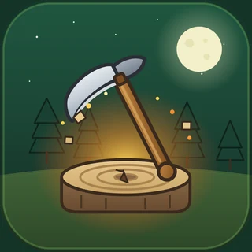
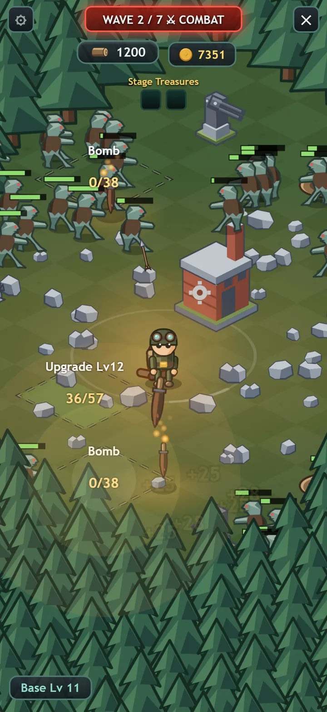
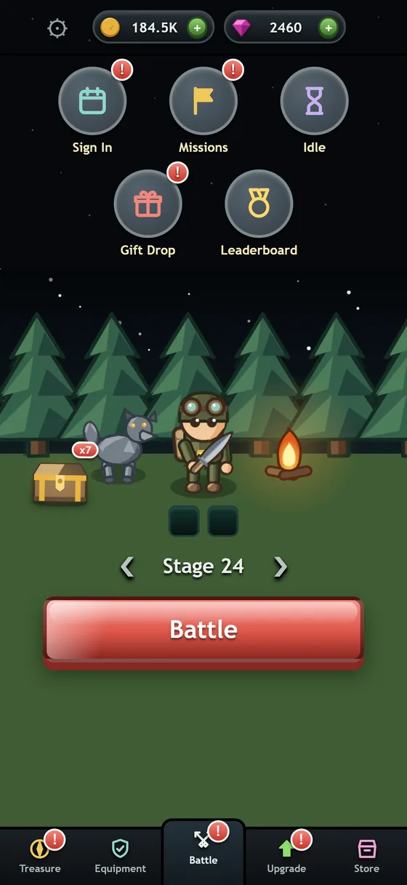
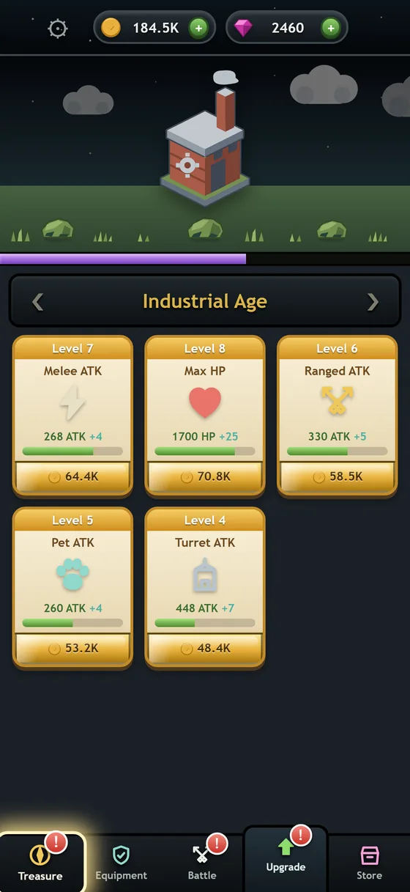
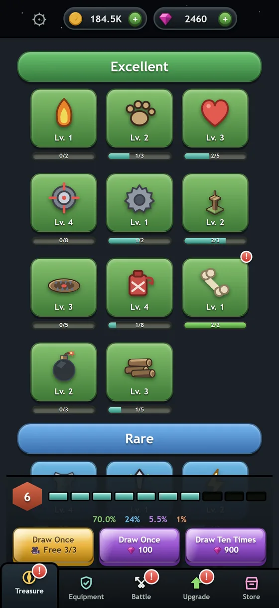
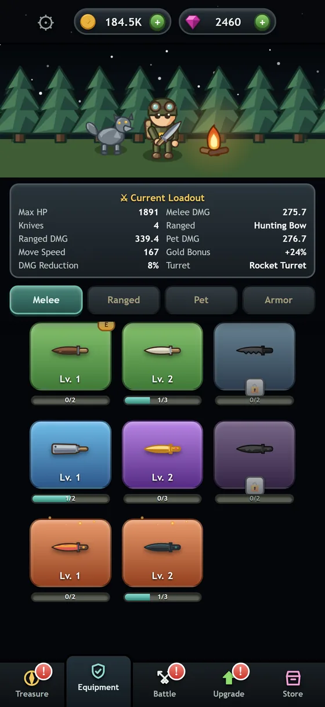

Timber Frenzy
Hold the clearing. Seven waves a stage, a hundred stages, ten Ages of everything you built with what you carried back.
Free on iOS today. The Google Play listing is not live yet.

One run, three parts
There is no build phase and no timer waiting for you. A stage is a fight you walk into and either finish or do not, and everything you spend afterwards is what you carried out of it.
Pick a stage from camp
Camp is the quiet screen: your hero, your animal, the chest you have not opened. Choose how far up the ladder to go.
Hold seven waves
You fight in the clearing yourself, alongside a turret and your animal. Chop what is standing for wood, and drop bombs and oil in the path of what is coming.
Spend it, or lose it
Coins and treasure come back with you. Die and you still keep the run’s takings — the stage is what you lost, not the afternoon.
Ten Ages
Your base has a level and the level has a name. Each Age raises what every upgrade can reach — melee, ranged, health, your animal, your turret — so the climb is the progression rather than a number beside it.
- 01Camp
- 02Timber
- 03Stone
- 04Brick
- 05Castle
- 06Powder
- 07Industrial
- 08Modern
- 09Fusion
- 10Space
The building on the hill changes with every one of them.
What you take in
- Turrets
- Five tiers — Crossbow Tower, Sentry Gun, Mortar, Rocket Turret, Laser Turret.
- Companions
- Scout the Dog, Gale the Hawk, Ash the Wolf. One fights beside you.
- Loadout
- Melee, ranged, pet and armour, each levelled from duplicates.
- Treasure
- Rarity tiers, with the draw odds printed on the screen you draw from.
- Plays
- Offline, with an anonymous cloud save. No account, no login.
Four screens




Get Timber Frenzy
Free on the App Store. The Google Play listing is not live yet — the button at the top of this page will link out when it is.